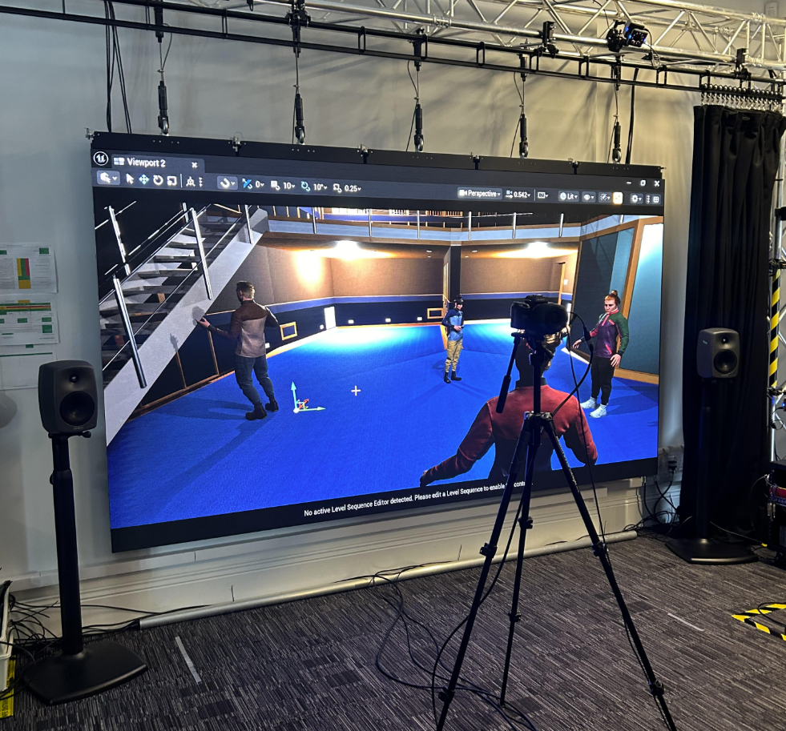
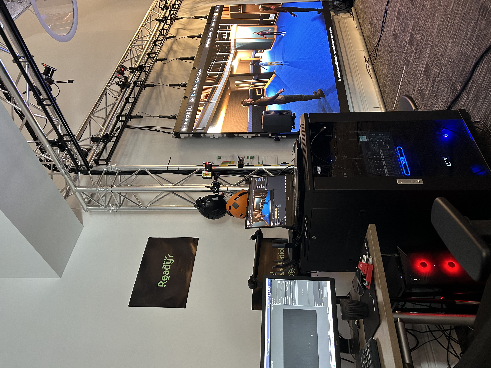
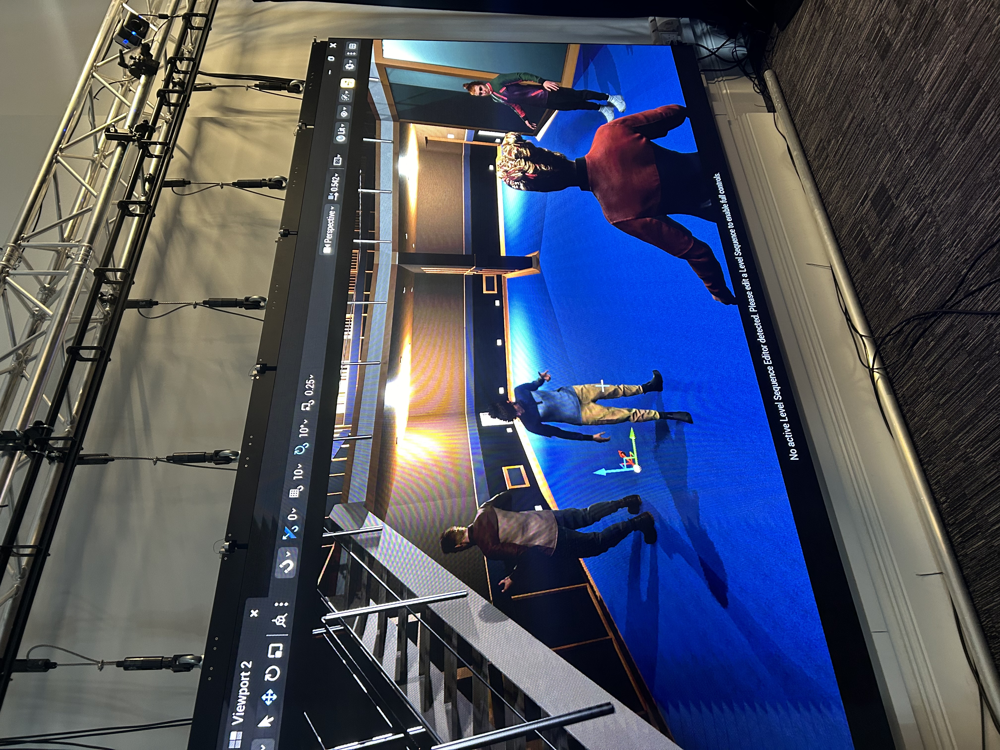
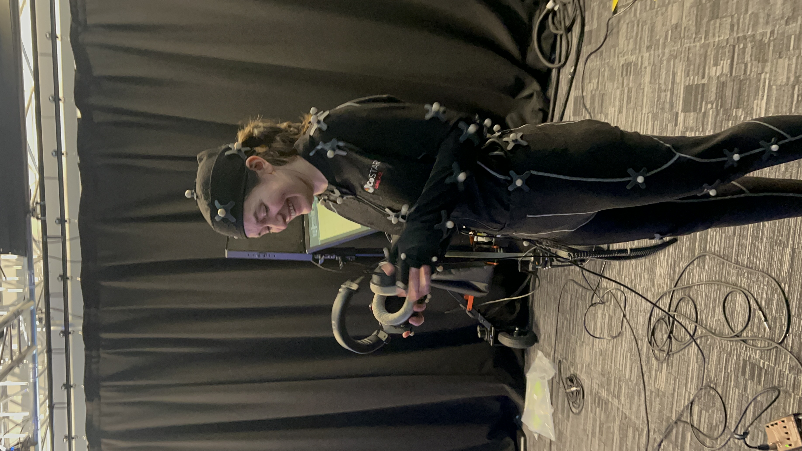

CoSTAR Live Lab - Marnie Glum
Assisted on a landmark live technical trial utilizing real-time multi-site motion capture and low-latency audio networks to stream a live musical performance into a shared virtual ecosystem.

Project Overview
This project, led by Technical Specialists from CoSTAR Live Lab, XR Stories, and the AudioLab, explored the future of distributed hybrid live events. The landmark technical trial featured Marnie Glum performing live while physically spread across four different locations across York. The tracking telemetry from separate Vicon motion capture volumes was synced over low-latency network pipelines and rendered in real-time within a shared virtual environment inside Unreal Engine 5. This virtual environment was live-streamed to an audience at Production Park, who experienced the performance in immersive spatial audio via an L-Acoustics L-ISA system.
The Technical Challenges & Solutions
Hurdle 1: Distributed Infrastructure Maintenance
The Problem: The complex technical stack was distributed across multiple physical environments, meaning any slight discrepancy or drop in server latency across the different sites would instantly break the illusion of the virtual band performing together.
The Solution: I acted as the hands-on deployment and technical support link, assisting in rigorous, ongoing pre-show system calibrations, hardware checks, and physical infrastructure readiness. By maintaining clear status visibility, our team guaranteed technical stability before the live stream began.
Hurdle 2: Live-Environment Real-Time Technical Support
The Problem:Live R&D trials run in front of a real audience leave no room for error. Real-time anomalies like tracking calibration drift, audio lag, or physical sensor drops required rapid intervention without disrupting the immersion of the performance.
The Solution: I shifted from pre-event maintenance to live operations tracking, serving as frontline on-site support at the venue. I closely monitored technical stability metrics, managed safe user interactions with the space, and handled rapid edge-case adjustments to ensure zero live-event downtime.
On-site Operations
. Hover over any card to reveal the project necessity and relevant workflow details.

Fig 1. Lab Workstation.

Fig 2. Unreal Engine Live-Feed Monitor.

Fig 3. Vicon Motion Capture setup.
Technical Adaptation & Workflow Evaluation
Expanding my skill set from static setups into advanced distributed live-performance systems required a rapid shift in technical focus. Faced with maintaining multi-site system continuity and managing live hardware environments for the first time, the objective was to decode a complex backend infrastructure and quickly establish a practical support process for the team.
1. Hardware Integration & Set Adaptation
Stepping onto a live motion capture stage for the first time meant moving out of a pure software environment and learning how physical capture spaces operate under production conditions. I jumped directly into production by assisting on-set with the physical Vicon setup. Learning how tracking markers translate from physical actors to live streams allowed me to understand the technical assets at their source, giving me the vital context needed to handle the files correctly once they were imported into the engine.
2. Infrastructure Support and Cross-Site Communication
Transitioning from independent workflows to a live, distributed network framework presented a steep learning curve regarding multi-site latency, signal routing, and technical synchronicity. I focused on supporting other teams remotely from the GuildHall site whilst working toward our venue stability. By managing local issues and maintaining clean communication across the sites, I resolved critical environment alignment issues and helped create a repeatable monitoring process for the team.
3. Performance Capture & Facial Tracking Setup
Organizing the motion capture in real-time required close technical collaboration in the lab. Working directly along the Lead Creative Technologist, I assisted with the physical preparation of the motion capture suit and offered guidance to the musicians during the full body calibration process. Additionally, I took responsibility for configuring the facial motion capture, ensuring the facial tracking was stable and other equipment such as microphones didn't interfere.
Reflection & Further Development
A transparent reflection reveals the steep technical learning curves I navigated throughout this journey, alongside a clear personal roadmap for how I will carry these newly developed skills into my future technical roles.
What I learnt: Operating as a technician in this live R&D trial allowed me to scale my departmental background directly into a high-pressure live production. I discovered how my foundation in technical support translates to checking hardware readiness and maintaining site infrastructure under strict live timelines.
How I'll apply it: On future projects, I can rely on my technical foundation when adapting to new software and hardware environments.
What I learnt:Working on a live trial transformed my understanding of performance capture compared to working in post-production. Collaborating with the Lead Creative Technologist to prepare mocap suits, guide musicians through live calibrations, and configure facial capture for real-time production showed me how critical immediate troubleshooting is. I learned that preventing errors at the physical source, for example ensuring microphones didn’t interfere with tracking telemetry, is vital when you can't rely on post-production clean-up.
How I'll apply it:I am confident operating on live, real-time projects where immediate technical precision is required. I can proactively spot and mitigate hardware or signal interference, ensuring a clean data stream goes directly into the live engine.
What I learnt:Taking on responsibility for unfamiliar localized audio mixing and performer feed management proved that I can adapt to managing specialized, live-to-air technical pipelines. I focused on interpreting the musicians' feedback requests and ensuring they could hear remote performers clearly without technical disruption.
How I'll apply it:I have developed a personal approach to managing unfamiliar systems and technical hardware interfaces under varied settings. I won’t hesitate when facing specialized equipment or unfamiliar software environments, because I know how to step in, learn the interface on the job, and confidently support the team.